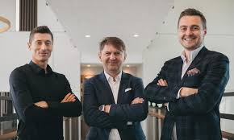
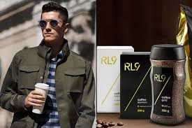

Prowadzi działalność m.in. w branży reklamowej, inwestycyjnej, deweloperskiej, mieszkaniowej i biotechnologicznej. Jest udziałowcem spółki Protos Venture Capital, przez którą inwestuje w startupy, e-commerce i serwisy internetowe. Posiada własną agencję Stor9_, specjalizującą się w komunikacji marketingowej, która zajmuje się zawodowym wizerunkiem piłkarza oraz jego żony, ułatwiając zarządzanie ich działaniami o charakterze biznesowym. Do klientów agencji należą m.in. Małgorzata Kożuchowska, Dawid Woliński, Bartosz Bednoż czy Hubert Hurkacz.  Lewandowski jest także udziałowcem serwisów internetowych, w tym sporticos.com, lokalnyrolnik.pl i wedding.pl. Posiada udziały m.in. w spółkach LS Investments, RL Investments czy RL Management, zajmującej się wynajmem i zarządzeniem nieruchomościami, a także w sklepie piłkarskim Zgoda FC. W 2017 za pośrednictwem RL Investments nabył 49 proc. udziałów w domu mediowym RL Media, uruchomionym przez holding marketingowy Group One (obejmujący m.in. agencje Change/Serviceplan i Gong oraz dom mediowy Value Media). W 2019 wprowadził na rynek markę RL9 Pro, mającą na celu sprzedaż produktów przeznaczonych dla sportowców i osób aktywnych fizycznie. Pierwszym produktem, który trafił do sprzedaży, był napój izotoniczny sygnowany inicjałami Lewandowskiego, który powstał przy ścisłej współpracy z firmą Oshee. W 2020 do sprzedaży trafiły kawy sygnowane logo RL9 Coffee. W tym samym roku poinformowano o inwestycji piłkarza w otwarcie restauracji w budynku XIX-wiecznej zabytkowej warzelni na terenie Browarów Warszawskich. W lokalu docelowo ma być serwowana kuchnia europejsko-amerykańska, natomiast za menu ma być odpowiedzialny Tadeusz Mueller, syn Magdy Gessler. W sierpniu 2020 podpisał umowę inwestycyjną z Movie Games, notowanym na warszawskiej giełdzie producentem i wydawcą gier komputerowych[408]. Na jej mocy, piłkarz stał się udziałowcem spółki zajmującej się produkcją gier o tematyce sportowej. W tym samym roku zainwestował m.in. w aplikację Less, polegająca na zakupie i sprzedaży używanych ubrań. Poprzez spółkę Monting Development, której jest współwłaścicielem inwestuje w grunty. W styczniu 2021 zainwestował w firmę Bio-lider, która oferuje biopreparaty dla rolników. Uwagę opinii publicznej przyciągnęły plany Roberta Lewandowskiego dotyczące planów jego wielomilionowej inwestycji w wybudowanie restauracji na wodzie na Mazurach w ramach projektu ''Wodny Świat''. Ostatecznie piłkarz wycofał się ze spółki Nowe Mazury 8 odpowiedzialnej za inwestycję.  Jest właścicielem akademii piłkarskiej w Warszawie. Zarobi piłkarza początkowo były dość niewielkie, jego pierwszy klub Delta Warszawa, płacił swym zawodnikom ok. 600-1500 zł miesięcznie. Podczas gry w Lechu Poznań inkasował już kilkadziesiąt tysięcy miesięcznie. Odkąd Lewandowski trafił do Niemiec jego zarobki kalkulowane były w milionach. Polak znalazł się m.in. w rankingu najlepiej opłacanych piłkarzy 2020 roku według "Forbesa" (według szacunków magazynu w 2020 Lewandowski miał zarobić 28 mln dolarów - 24 z kontraktu i 4 z umów reklamowych). W 2018, z majątkiem szacowanym na 353 mln złotych, wraz z żoną zajął 94. miejsce w rankingu 100. najbogatszych Polaków tygodnika „Wprost”. Rok później, z majątkiem 450 mln złotych, para uplasowała się na 88. pozycji, natomiast w 2020 zajęli 80. pozycję gromadząc pół miliarda złotych. W 2019 znalazł się na 3. miejscu w rankingu 50. najbardziej wpływowych ludzi w polskim sporcie wg magazynu „Forbes” i Pentagon Research, a także zajął 21. miejsce w rankingu 50. najbardziej wpływowych Polaków tygodnika „Wprost”.